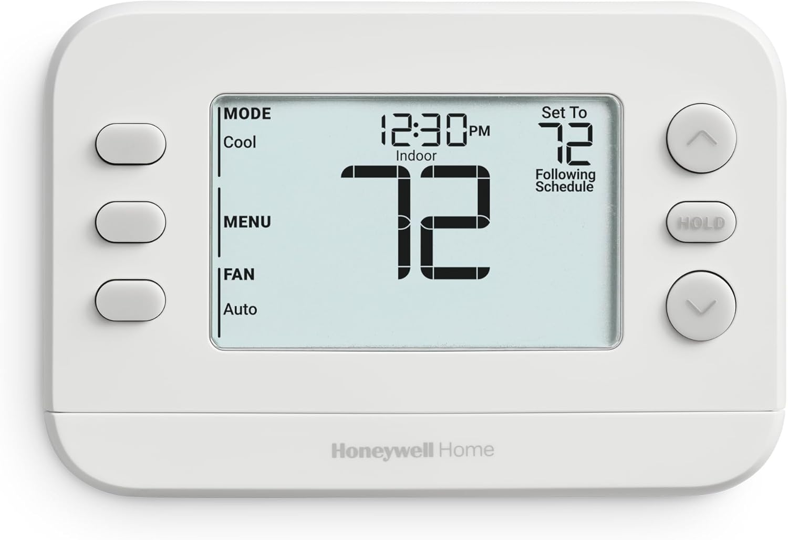
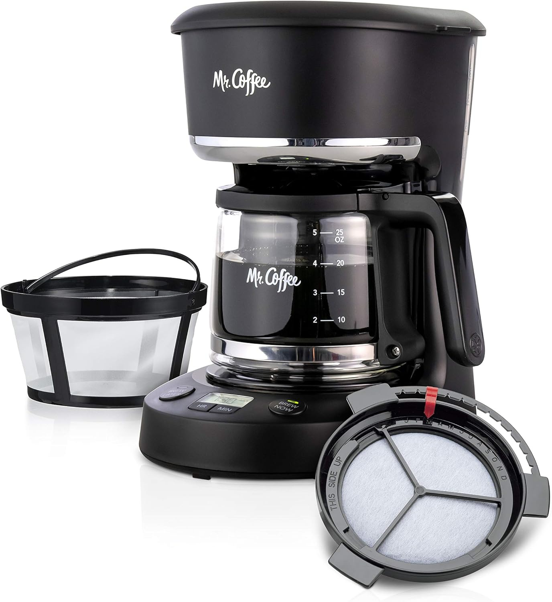
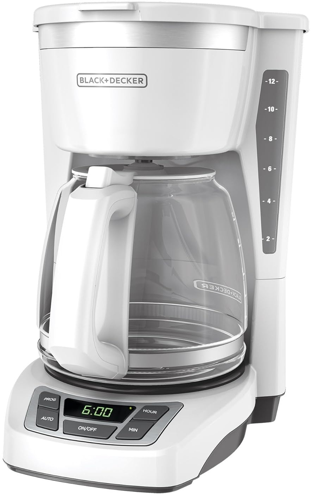
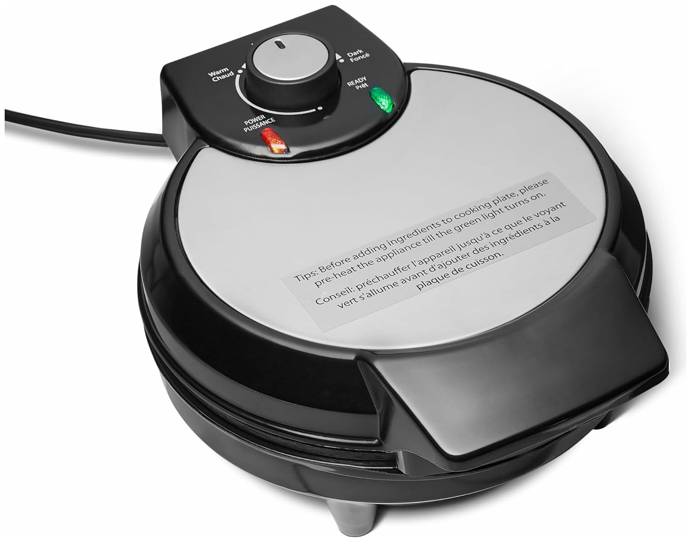
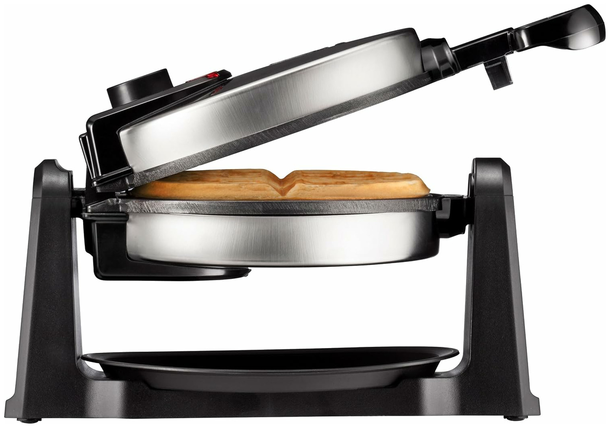

Honeywell thermostat
(X2P RTH20B)
[product details] [guidebook pdf]

Mr. Coffee 5-cup coffee maker (PC05)
[product details] [guidebook pdf]

Black-and-Decker 12-cup coffee maker (CM1160-W)
[product details] [guidebook pdf]

Amazon Basics Waffle Maker
(RJ04-V3)
[product details] [guidebook pdf]

Chefman Rotating Waffle Maker
(AB-258NA)
[product details] [guidebook pdf]
In the single-task, single-appliance setting, BookWorm averages 80% task success across the Honeywell thermostat and Mr. Coffee maker, far outperforming prior work—Code-as-Policies (35%) and Promptbook (10%).
Remove guidebook
80% → 10%
−70 ptsRemove human feedback
80% → 35%
−45 ptsRemove next-state prediction
80% → 40%
−40 ptsIn the transfer setting, BookWorm first learns on the Mr. Coffee maker… → …and then adapts to the morphologically distinct Black-and-Decker maker.
BookWorm transfers far more efficiently than every baseline: it scores 45 percentage points higher than the Experience Replay baseline given the same amount of human supervision.
Task success on
0% → 80%
+80 ptsStep Completion Rate on
25% → 90%
+65 ptsHuman feedback on
50 → 25
−25 roundsBookWorm effectively transfers knowledge from to , leading to far greater task success rate on the new device while requiring a fraction of the amount of human feedback.